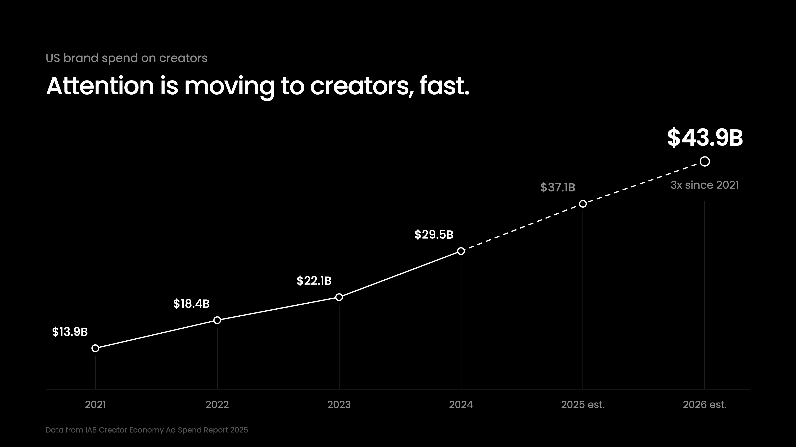
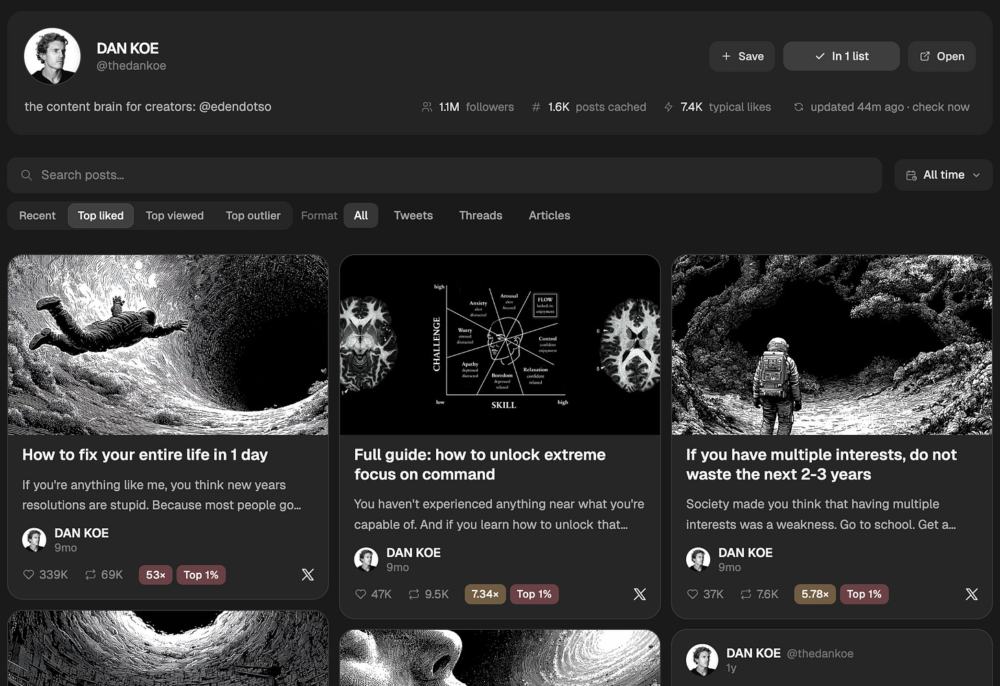
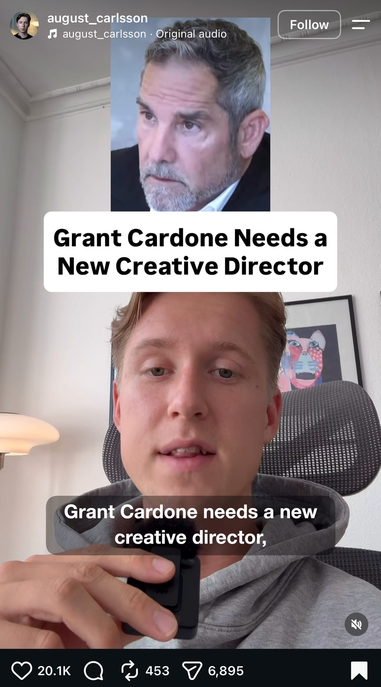

2027 年最赚钱的 AI 生意
最赚钱的技能，从来都是获取注意力。
原因显而易见。
如果你的目标是赚更多的钱，那么你做的软件有多好并不重要。你花了 3 年、推翻无数份废弃的草稿才写出一本书，也不重要。你拼命努力、提升自我以增加职业机会，也不重要。
如果没人知道你、不知道你提供什么，他们凭什么付钱给你？
也就是说，无论你在做什么工作、建什么生意，捕获注意力和赢得客户，永远是决定你成败的第一件事。
这既适用于你自己的生意，也适用于别人的生意。
而且别人愿意付高价，请你来替他们做这件事。
当工作越来越不保，人们面前只剩 3 个选项：
- 抱怨生活不公平，然后什么都不做
- 提升技能、重新学习，去找更好的工作机会
- 开始做那个你一直想做的生意
多得离谱的人会选第 3 个。
不出你所料，也像社交媒体上所有人都在呐喊的那样，他们建生意的方式就是：做一个个人品牌。
为什么？
因为注意力是有限资源，而且只会越来越稀缺。人可以赚更多的钱，但花掉的注意力永远收不回来。
在这封信里，我会告诉你如何掌握在社交媒体上捕获注意力。这样，至少在未来几年，你赚钱不会有问题。
用你学到的东西，你可以开自己的生意，用社交媒体当燃料；也可以成为其他公司背后的"一人创意团队"——他们会为你的这套技能付高价。
推广 -「第二次文艺复兴」工作坊：
我和 Hussain Ibarra（Substack 订阅数从 2,600 做到 20,100）合作，教人写真正让人想读的新闻信和长文。
如果你在考虑建一个 Substack，或想写出更好的 X 长文，在这里报名。收费 49 美元，但教给你的技能，能帮你赚到远超这个数字的钱。
你要么成为创作者，要么为创作者付钱，要么靠给创作者打工赚钱
这些数据几乎让人无法忽视。
高盛预测，创作者经济将几乎翻倍：从 2023 年的 2,500 亿美元，到 2027 年的 4,800 亿美元。
2025 年，创作者从广告中赚了约 1,850 亿美元——这是他们首次超过传统媒体。
美国品牌 2021 年在创作者身上花了 139 亿美元，IAB 预计 2026 年将达到 439 亿美元——5 年翻了约 3 倍。

荒唐。
而我既是创作者，给创作者打过工，也为创作者付过钱，所以我知道人们开的价有多离谱。海量 VC 资金被砸进来，为一条 Reel、或 YouTube 上 60 秒的植入位付几千美元——90% 的情况下甚至带不来任何效果。
重点是：注意力在社交媒体上。不再是电台、电视或新闻。当你想开始任何一种生意——从聊你兴趣的生活方式生意，到下一家独角兽创业公司——在这个阶段，发内容几乎已经是默认动作，是你吸引付费受众的方式。
公司想扩张时，会往联盟营销和合作推广里砸几百万美元。Hormozi 的广告一直追着我，说他每月付给创作者超过一百万美元来推广 Skool。而且这还不提 Hormozi 本身就是一个创作者，这对 Skool 的增长帮助巨大。
"创始人主导营销"现在是创业圈的一个热词，本质意思是：增长创业公司的最新也最棒的打法是……你猜对了，做个人品牌、发内容（顺便说一句，他们大多数人做得都很烂，而你最好开始用 Eden 做研究、做出差异化、发内容）。
这对你的意义是什么？
无论你打算自己干、已经有一门生意，还是想给别的公司打工——最值得学的技能都是捕获注意力。放到数字世界里，最赚钱的技能就是做内容——做好的内容，不是无限产出的垃圾。
不幸的是，你可以掌握捕获注意力的方法，但这不意味着你真的捕获到了它。
如果一条推文或 Reel 拿到百万播放，而你其他所有帖子每条只有几千播放，那毫无用处。这说明你的内容还行，但你的品牌根本不存在。两个都要有。
你可以总是试图爆火，这是大多数人的做法（也是大多数人惨败的原因）；你也可以建造一个内容世界，让人忍不住去探索。
我来教你怎么做。
一人创意团队
内容领域正在发生一场巨大的转变。
我是 Eden 的创始人，一个让创作者和数字生意研究爆火想法、规划排期内容、卖数字产品、运营邮件列表的工具。
这不是在打广告。是想说明：我们有这方面的数据，而几乎没人有。我们知道在几十亿条帖子里，哪些话题、钩子和内容风格有效。
除此之外，自由职业者和机构用它来运营客户的个人品牌，从内容、邮件营销，到数字产品发布和漏斗搭建。
我们和这些内容机构、媒体团队交流，他们说的都是同一类话（意译）：
"我们还没裁人，但在不扩团队的情况下，我们能接多得多的活，因为每个人的产出都上去了。"
"创作者和创始人雇我们，是因为他们连想内容的时间都没有。他们要管团队、要经营公司，这些都要求专注。AI 能替他们写内容，但他们清楚自己需要一个比他们更会用 AI 的策略师或创意总监。这件事依然需要创造力和思考。"
"AI 还是写不出最好的帖子，我想它以后也写不出，但它能研究什么表现好、理解策略、起草几乎到位的稿子。我现在的全部工作就是审阅和改写初稿。以前一天 12 小时，现在 4 小时。"
在我看来，一个人能做的最赚钱的 AI 生意，是两面的。
第一——你可以成为自己的创意团队。做个人品牌。建受众。做数字产品。建邮件列表。全部这些。而这是你唯一的全职。相信我，就算有 AI，它也是一份全职工作。如果你是创作者，你大概率不会在没有团队的情况下就去写软件。
第二——你可以成为别人的创意团队。帮那些没有创意余力、产出不了不可替代内容的公司、创始人，甚至创作者。大多数创始人还在做"公告式"内容，完全不知道在网上建立影响力需要什么。
换句话说，你成为自己品牌或别人品牌的创意总监。
如果你能做到这一点，我看不出你凭什么不能要一个远低于整个团队成本的价格。服务 1-3 个客户，每月 1-7.5 万美元，没那么遥不可及（前提是你擅长这个并持续练习——别让你的大脑说服你，这是你下一次快速暴富的机会）。而那些往营销里砸几百万的企业主，看到这个价格连眼皮都不会眨。
这个一人创意团队长什么样？
你需要学哪些技能？
岗位 1：品牌策略师
品牌策略师负责定位与心智。
他们会第一个告诉你：别只是追趋势、想让每条帖子都爆。增长和互动很重要，但不能以牺牲信任和权威为代价。
顺便说一句，下面我会告诉你这一切具体怎么做。
岗位 2：内容策略师
和品牌策略师不是一回事。
内容策略师是那种在各话题和利基里侦察什么内容表现好、然后提出创作者下一条该发什么的人。他们深入研究帖子格式、YouTube 封面与标题结构、完播率和传播性。
他们擅长涨号，但不考虑品牌策略的话，创作者一旦停更，没人会在意他去哪了。
岗位 3：内容写手 / 社交媒体经理
就是起草推文、YouTube 或 Reel 脚本、X 长文和 Substack 新闻信，并规划、发布它们的人。
他们把内容策略师的想法和品牌策略师的方向落地，确保内容与之对齐。
你大概已经能看出，为什么大多数人用 AI 建不起任何持久的东西。他们仍然把它当成暴富捷径。他们以为只要让 Claude 在没有方向、没有数据的情况下狂吐脚本，就能神奇地和受众建立连接。
几乎没人考虑品牌策略。
有些人会考虑内容策略。
大多数人只是把随机的想法变成帖子，然后祈祷它能火。
这就是你的竞争对手，脱颖而出并不难。
如果你是我要服务的客户，我会这样打造不可取代的个人品牌
我们来玩点有意思的。
我假装正在把你签下来当客户。
这样，如果你想成为创作者，你可以自己执行这套流程；如果你想做面向别人的内容生意（代写推文、给品牌写 Substack 长文之类），这就是你签下他们的方式（我稍后会给你签下第一个客户的最佳策略之一）。
第 1 步：入驻通话，打造他们的智识签名
要让他们的品牌和内容独一无二，你需要从他们那里拿到相当多的上下文。
签下他们之后，约一次通话，把你需要的一切都问出来。录下通话，这样你可以把文字稿存到某个地方，之后用 AI 引用它。
如果你是为自己的品牌做这些，我已经有一个 quiz/提示词给你用。它还附带一门 30 天创作者冲刺课程。它会基于当下正在爆火的内容，加上让你独特的东西，替你搭好策略。在这里试试。
以下是你会问客户的问题，你也可以问自己。你还可以把这些粘进 Claude，让它把这些信息从你这里挖出来，存成一份品牌文档，之后随时可以被 AI 引用。
这些问题共同塑造你的品牌。
它们可以衍生出一个个内容话题，是你接下来 6-12 个月持续发的东西。有人看到会问："我怎么在一条帖子里把这些全讲完？"
讲不完。这是长期游戏，这也是大多数人惨败的原因。因为他们想要快速的注意力和权威。祝你好运。
因为内容较长，我把这些以及更多东西做成了一个综合提示词，保存它或复制到你自己的工作区。
- 你最想帮谁？描述一个真实的人。
- 他们现在糟糕的一天是什么样的？
- 他们跟朋友抱怨时会说什么？用他们的原话。
- 他们已经试过什么、没用？
你帮谁
- 你经历过什么，而你的受众此刻正在经历？
- 你人生的哪个瞬间，事情开始改变（不管多小）？
- 你构建过、尝试过、失败过或想通过什么？从大到小列出来，每一条都值得。
- 你能指向哪些成果——你自己的，或你帮别人取得的？
你的故事
- 谁的书、帖子或视频你从不划走？写出真实的人和标题。
- 他们的哪个想法你总是反复回到，为什么？
- 谁改变了你的思考方式，即使你现在不同意他们？
谁塑造了你的思想
- 你能聊几个小时的话题是什么？全列出来，包括看似无关的。
- 其中哪 2-3 个对你最重要？
- 你用什么区别于别人的角度切入每一个？（比如"通过心理学"或"作为前护士"）
- 人们最常找你问什么建议？
- 你一直在反复向人解释什么？
内容支柱与独特视角
- 用一句话，你想帮人做到什么？
- 你相信什么，而你所在领域的多数人并不相信？
- 你领域里的哪些常见建议，你认为其实是错的？
使命与信念
- 哪种生活方式正在伤害你想帮助的人？
- 你想帮他们逃离什么样的生活？用你自己的话回答。
- 如果可以，你想消灭哪个神话或习惯？（一个习惯或想法，不是某个人或某家公司。）
你反对什么
- 世界上刚刚发生了什么变化，而多数人还没注意到？
- 为什么它现在重要
- 跟随你五年后，他们的日常生活是什么样？
- 他们会在自己的简介里骄傲地称自己为什么？
- 在他们的故事里，你是谁？（他们的向导、记录旅程的人、还是走出去又带着地图回来的人。）
你要带他们去哪
- 你理想的读者每天相信什么、做什么？列出 5-12 条规则。
- 你给自己的想法、方法或问题起过名字吗？写出每个名字以及它的含义。
规则与词汇
把这些信息都存到安全的地方，比如 Eden 里的一个品牌板，这样你每次想帖子点子时都能引用它。
第 2 步：如果他们在发内容，抓取他们最好的内容
我想我们都同意：AI 无法复制一个人的声音。
就算再接近，也总有一个小地方让你觉得不对。
这不是我们的目标。AI 处理公司声音完全没问题，但个人品牌之所以"个人"，是有原因的。它需要那一击独特性。
我们采访他们、拉入他们最好的内容，不是为了自动化整个流程。而是在建一个知识库，收集这个人身上所有独特或值得注意的东西。之后你用 AI 头脑风暴、起草或想点子时，就比从零开始容易得多。
要在所有平台上拉入他们最好的内容，用 MCP 把 Eden 接到 Claude 或 ChatGPT，让它能拉取他们的帖子、或正在爆火的其他人的帖子，给它他们的社交账号，然后用这样的提示词：
"拉取 @handles 最好的内容。他们在每个平台上的，各 10-20 条。然后，我要你记下让他们独一无二的那些核心理念，他们声音里有性格的部分，以及猜猜他们的世界观或哲学是什么——能号召别人追随的那种。本质上，记下所有让他们成长的东西，汇编成一份文档。"

也值得直接看他们各平台上的头部帖子，好让你发现可复制的模式。
第 2.5 步：如果你还没开始发内容
作为新手，这大概是你所能做的最好的事。
你必须理解：你的头脑是被那些对你影响最大的人塑造的。你最好的想法——那些将带来你增长的想法——是你解读从别人那里吸收的想法的方式。
有点像"像艺术家一样偷"（steal like an artist），只不过这就是头脑的运作方式。
当你接触到一个新想法时，换掉那些正在驱动你头脑的信念和想法——这是聪明的核心标志。死守着那些不能带来优势结果的信念和想法，是愚蠢的标志。
我的头脑大部分由 Naval、Leo Gura、Mihaly C、Steven Kotler、Ken Wilber 更多人的想法混合而成。这些想法在我头里的相互作用，加上我自己的生活经历，让我的想法成为我的。
所以，如果你还没发内容，列一个对你影响最大的 5-10 个人的名单。
如果他们恰好是创作者，更好。把他们放进一个列表，这样你可以浏览他们所有内容，或跟内容对话。
然后用上面提到的同一个提示词，但换成他们的社交账号。如果他们没有社交媒体，就让 AI 从全网和他们的书里提炼最好的想法。把它存成文档，放到安全的地方。
第 3 步：建一张有研究支撑的内容地图
到目前为止我们有了：
- 足够多的品牌上下文，去创造独一无二的东西
- 记录了最好的想法，我们可以复用、重新定位、复制
现在，我们需要戴上营销的帽子。
其实都不只是营销帽。是艺术家的帽子。
大多数"创意人"讨厌研究爆火帖子、表现最好的 YouTube 标题，或把内容建立在更可能表现好的东西上……但你只是从一个角度在看这件事，它掩盖了你实际在做的事。
你在收集参考。
艺术家就是这么做的。他们有灵感板和参考物，帮助塑造他们的作品。他们不是 1-1 复制，而是提炼模式和原则，让自己的作品更可能表现好。
因为说句实话，你想让你的作品成功。你只是觉得看数据很膈应，好像它不属于创作过程。醒醒。
你这么做：
（免责声明：这封信里我提到 Eden 的次数很多，因为说实话，没有别的东西能干这个活。社交爬虫看不到多个账号之外的表现，GrokBot 这类应用很棒，但只在 X 上工作，而你最好去研究那些你没在发的平台，才能得到独特的想法。）
就是用这个提示词，把你目前建好的 2 份文档插进去，就这么简单：
"我要你建一张有研究支撑的内容地图：3-4 个独特而宽泛的内容支柱，每个支柱下分出 5-7 个话题，话题既要基于已被验证有效的想法，又要通过我基于 [@品牌文档] 和 [@内容文档] 的独特透镜。每个话题下分出 5-10 个可能表现好的想法，每个想法下再分出 4-5 个角度。看完我的品牌文档和内容文档，从中提炼出潜在的支柱和我的透镜，然后用 Eden 研究这些话题在各平台上什么表现好。我们想要一张独特的内容地图，但也要把它与过去 6-12 个月已被验证有效的模式合并。把输出整理成一份易读的文档。"
现在你有了大约 6 个月的内容想法可以开工。你可以让 Eve 或 AI 用我们之前建的上下文来起草，并根据当前什么表现好来校准帖子的结构。
我觉得很难否认：用这套流程，你会看到结果，而且你会远远领先于不做这些的人。
如前所述，这是一份你可以复制的文档/提示词，包含整个流程。读完整份可能要花点时间，但它很全面。
如何签下你的第一个客户
几年前，我的朋友 JK Molina（基本上是开创 Twitter 代写这个潮流的人）给我发了条私信。
大意是这样的：
"Dan，我知道你不想让任何人替你写，但我还是替你写了 10 条帖子。发发看，如果你喜欢，就让我继续写；或者至少给我一段推荐语。"
在我做社交媒体之前，我是自由职业者，冷启动外联纯粹是地狱。我讨厌它。
但收到这条私信时，我意识到：这一定是任何人用来签下内容客户（每月 2,500 到 5,000 美元）的最佳策略之一。你可以瞄准那些忙碌的创作者、创始人，或正在艰难增长的普通人。
你可以用一条提示词为他们做完上面所有的事，让它起草 10 条帖子，打磨好，然后每天发 10 条私信。
如果你真的这么做了，我很难相信你一个月还签不下至少一个客户。
这就是"无许可学徒"打法。
你为梦想中的客户免费干活，然后用一切办法把它摆到他们面前。
如果私信行不通，就在公开场合这么做：

在那条 Reel 里，他用这句话钩住他们："Grant Cardone 需要一个新创意总监，这是我的申请。他的内容好像还停在 2016 年。"
我认为 Grant Cardone 回复"来啊，我卡住了"，以及这条帖子的互动量，已经证明了这封信里我说的大部分。眼下这是一个巨大的机会。而你手里已经有所有工具，去签下这些客户、入驻他们、为他们创造出色的内容。